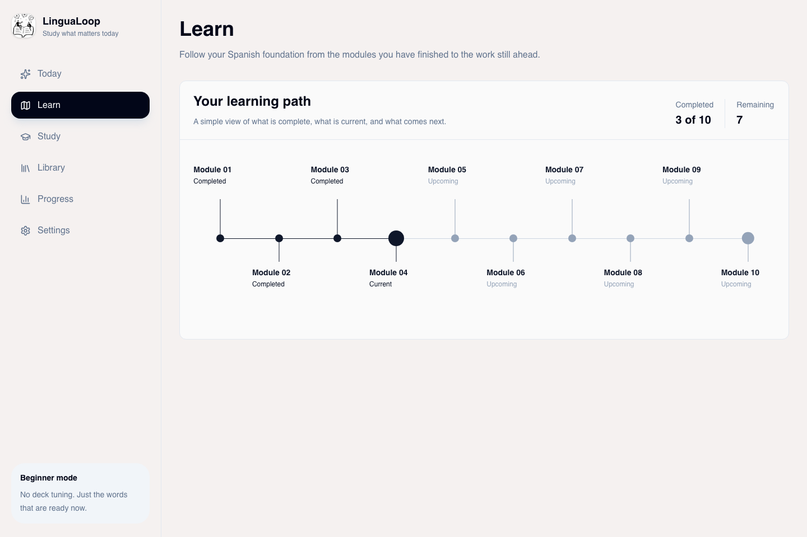

Learning path
Making progression feel visible without turning the product into a cluttered dashboard.
Product exploration / work in progress
A beginner language-learning product I am building to make daily study feel simpler and more guided than a dense Anki-style workflow.
This is an active prototype, so I am showing what exists now and what I am still shaping next.

What exists now
LinguaLoop currently includes onboarding, a Today dashboard, a focused flashcard study session, 50 beginner Spanish vocabulary cards, a searchable word library, progress tracking, settings, local browser persistence, light and dark themes, and a visual ten-module Learn path.
The learning model is built around high-frequency vocabulary, scheduled review, active recall, daily goals, weak-word surfacing, and visible progression.
What I am shaping
Making progression feel visible without turning the product into a cluttered dashboard.
Keeping review sessions focused on recall instead of deck management.
Building a calmer study space that still feels motivating enough to return to daily.
Exploring mini-stories, listening and captioned media, typing recall, and early speaking practice.
Next